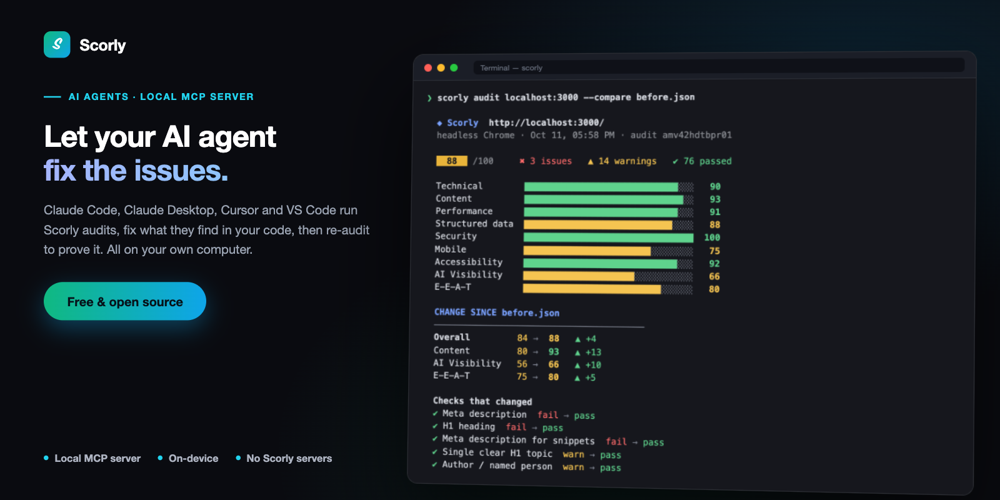

SEO Score & OG Preview
A free, open source browser extension that scores any page's on-page SEO in depth, shows how it will look when shared, and diffs the version you're building against the one that's already live.
One score, nine categories, and the checks underneath each one.
Click the icon and Scorly reads the page you're already on — no URL to paste,
no account, no subscription. The analysis runs locally in your browser, and
nothing is sent to a remote server. It works on localhost and
private-network URLs too, where most SEO tools simply refuse to run.
- Works on localhost
- No account needed
- Private, local analysis
- MIT licensed
- Works with AI agents
Scores the whole page, not just the title tag
One overall score from 0–100, broken into nine categories — Technical, Content, Perf, Schema, Security, Mobile, Accessibility, AI Visibility and E-E-A-T — each with its own bar, so you can see exactly which part of the page is dragging the score down. Every check is tagged pass, warn or fail with a severity, and rolled up into the Issues, Warnings and Passed counts on the Overview tab.
Explains every check
Fourteen tabs of detail: Overview with a SERP preview, AI Insights, Meta, Content (readability, word and sentence statistics, top keywords), H Tags, Links, internal and external link lists, Images with an alt-text audit, Schema with a JSON-LD viewer, Tech, Perf, Security and the share preview. Nothing is a bare number you have to take on trust.
Tells you how visible the page is to AI answer engines
The AI Insights tab breaks the AI Visibility score into the six things it is made of — crawler access, machine readability, trust signals, freshness, human-written copy and build quality — as one bar each. Click a bar to jump to the section that explains it.
Six bars, each one a section you can open. All heuristics, computed on the page itself.
Flags copy that reads as unedited AI output
Fifteen families of surface tell, taken from Wikipedia's Signs of AI writing: em-dash density, curly quotes, over-represented vocabulary, stock phrase formulas, false ranges, rule-of-three cadence, negative parallelism, participle tails, copula avoidance, vague attribution, inline-header lists, emoji headings, Title Case headings, uniform sentence rhythm, and chatbot text left in the page. Each one names the passages it matched, so you can read the evidence rather than trust a number.
That source is explicit that isolated tells prove nothing — one em dash is ordinary writing — so a page tripping fewer than three independent families is held below the "some patterns" band no matter how hard it trips them.
Spots a generated build, and separates it from what that costs
Two different questions, answered separately. The verdict identifies the toolchain from build fingerprints, source-location attributes left in the markup, dev-server artifacts, component-kit and utility-CSS vocabulary, and the hydrating-React stack that AI site builders emit. A recognised CMS cancels it. The score is only about faults that actually cost visibility — chief among them a client-rendered shell, found by comparing the HTML as served against the DOM after JavaScript runs, which is the only way to see what a non-executing crawler gets.
A generated site that server-renders and has real copy therefore scores 100/100 here and is still named as generated. The toolchain is not the fault.
Diffs localhost against live
Press Compare and Scorly opens a full-tab diff of two pages — your local build on one side, production on the other. Not just the scores: the exact wording. Title, meta description, every Open Graph and Twitter tag, the heading outline, and every paragraph, list item, button and label, diffed word by word, so a one-word edit to a 155-character description reads as a one-word edit instead of "these differ". Links and image alt text are matched by path, so the same link on both sides is never reported as a change.
Fill either side from a snapshot you saved earlier or let Scorly load a URL in a background tab, filter to just the differences, then export the whole comparison as PDF, CSV, JSON or Markdown — for a pull request, a client email, or a spreadsheet.
Lets your AI agent audit, fix and re-audit
Ask your coding agent to audit http://localhost:3000 with Scorly and fix what
it finds. It gets the same scores and checks as the extension, with the reason for
each, makes the fixes in your codebase, re-audits, and tells you what moved. Turn on
the extension's agent switch and audits run in your own browser, logins included.
Or use the same audits from a terminal or CI, with colour-coded reports.
Set it up in one command.

A re-audit after fixes: what moved, and which checks now pass.
Measures real performance
TTFB, request count and transferred size come straight from the browser's own Navigation and Resource Timing entries for the page as it actually loaded — no extra page load is triggered to measure it, and no synthetic lab score is involved.
Works where other SEO tools give up
localhost and private-network URLs are detected and shown with a badge, and
HTTPS checks are skipped there instead of penalizing a page that was never
meant to have a certificate yet.
Privacy
No accounts, no analytics, no tracking and no remote server. Scorly stores only what you ask it to, such as a snapshot you save, and it stays on your machine. The privacy policy sets out exactly what is stored and which requests are made.
Help and source
Questions, bugs and feature requests go to the support page. Scorly is MIT licensed and the full source, including every scoring rule, is on GitHub.